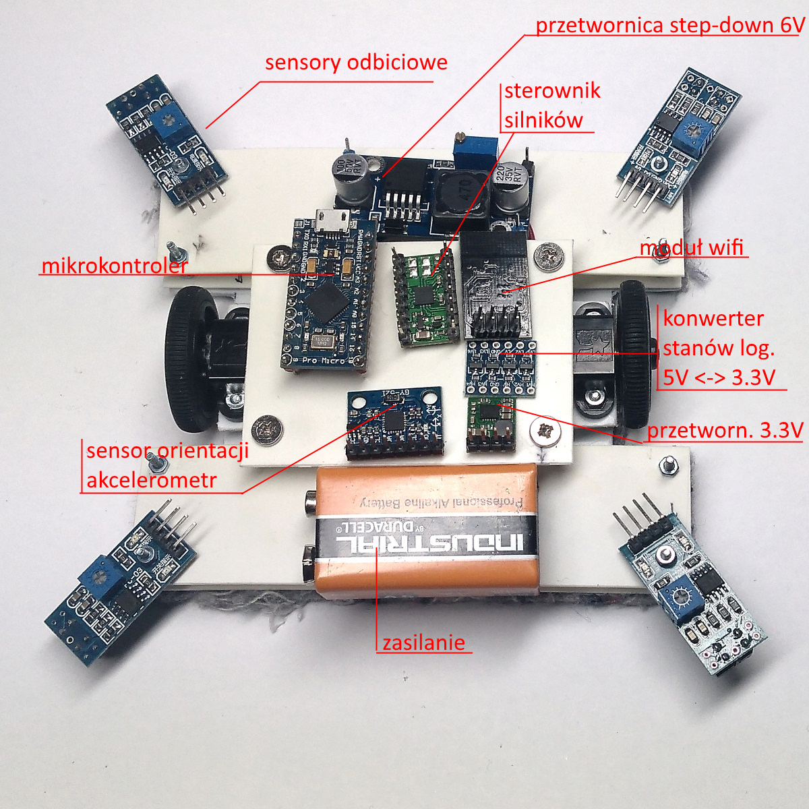

Pierwszy prototyp
Do testowania rozmieszczenia elementów podwozia, magnesów mocujących robota do tablicy, doboru elementów napędu (silniki, przekładnie, koła) skonstruowany został pierwszy prototyp z uproszczonym układem sterującym składającym się z:
-
docelowego mikrokontrolera zgodnego z Arduino Leonardo
-
modułu komunikacji Bluetooth
-
docelowego sterownika silników DRV8833
-
docelowej przetwornicy napięcia step-down zmniejszającej napięcie do 6V
-
baterii 9V
-
docelowego układu napędowego (silniki, przekładnie)
Do konstrukcji podwozia wykorzystana została płytka polistyrenowa o grubości 3mm. Płytka została wycięta w kształcie litery H, jej wymiary to 120mm na 100mm.
Silniki z przekładniami zostały zamontowane na platformach z możliwością regulacji ich wysokości nad powierzchnią płytki podwozia poprzez dodanie kolejnych nakrętek i podkładek pomiędzy płytkę podwozia i platformę montażową silników. Wysokość została wyregulowana tak, by prześwit pomiędzy płytką podwozia i powierzchnią tablicy umożliwił lekki docisk filcowej tkaniny stanowiącej roboczą część „gąbki” do ścierania (ok. 2.5mm)
W przedniej i tylnej części płytki podwozia zamontowano płytki z polistyrenu o grubości 1mm z wyciętymi otworami do zamontowania magnesów utrzymujących robota na tablicy. Dodatkowo od góry zamontowano kolejne płytki blokujące i unieruchamiające magnesy.
Wykorzystano magnesy neodymowe o kształcie walcowym o wymiarach: średnica 12mm, wysokość 10mm, klasy N38 o udźwigu 4.9kg.
Schemat ideowy
Rozmieszczenie elementów pierwszego prototypu

Prototyp
W przygotowaniu
Schemat ideowy
Testy prototypu